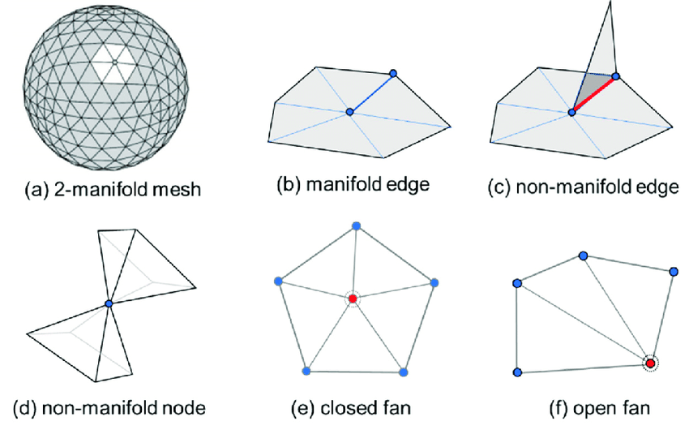

Average Valence
Say we have a triangle mesh. That is, a set of vertices, edges, and faces attached together in such a way to be manifold.
I mean things like this:

Casually put, manifold meshes are a tuple of vertices,edges,faces \((V,E,F)\) where:
- \(V\) (the vertices), can have an arbitrary number of incident edges and faces
- \(E\) (the edges), can only have exactly two incident faces
- \(F\) (the faces), have exactly 3 edges and 3 vertices
The number of incident edges/faces to a vertex is called the degree or valence of a vertex.
One interesting fact I’d heard around (kind of like mathematical folklore or something) is that when you increase the number of vertices, the average valence converges to 6.
Triangle meshes
The result hinges on a fundamental result in combinatorial topology, the Euler characteristic.
It says that $|V| - |E| + |F| = 2(1-g)$ where $g$ (the genus) basically counts the number of holes in the mesh. A mesh for a sphere has $g = 0$, a mesh for a torus has $g = 1$, and so on.
I thought the valence result was a little surprising, so I wrote up a brief argument based on Euler’s formula:
Recall, we’re restricting our attention to a triangle mesh. Say $d_i$ is the degree of each vertex. Define $D = \sum_{v \in V}d_i$, the sum of all degrees of all vertices.
Note that when you add up all the degrees for each vertex, you double count the edges. That is, \(|D| = 2|E|\).
Similarly, when you add up all edges around a face, you triple count the faces. That is, \(|D| = 3|F|\).
We can now write $ 2(1-g) = |V| - \frac{|D|}{2} + \frac{|D|}{3} = |V| - \frac{|D|}{6}$. Rewriting and diving both sides by $|V|$ gives us an expression for the average degree
Average degree $= \frac{|D|}{|V|} = 6 - \frac{12(1-g)}{|V|} \to 6$ as $|V| \to \infty$.
So that’s the result, the average vertex degree tends to 6 as we increase the number of vertices. It’s also kinda neat that this result is independent of the genus of the mesh.